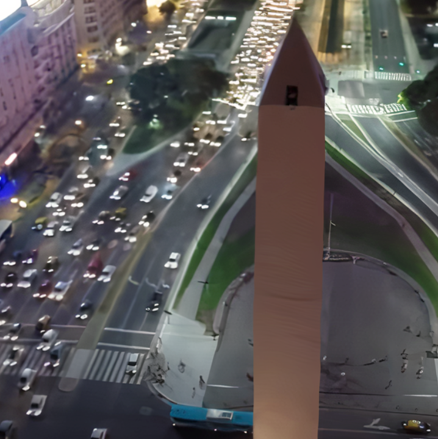
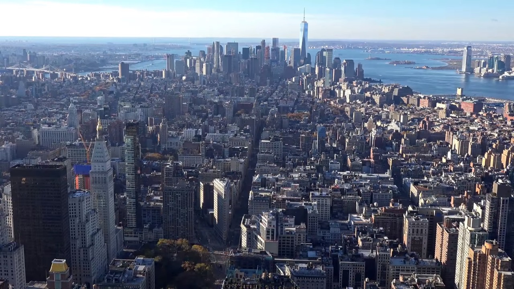
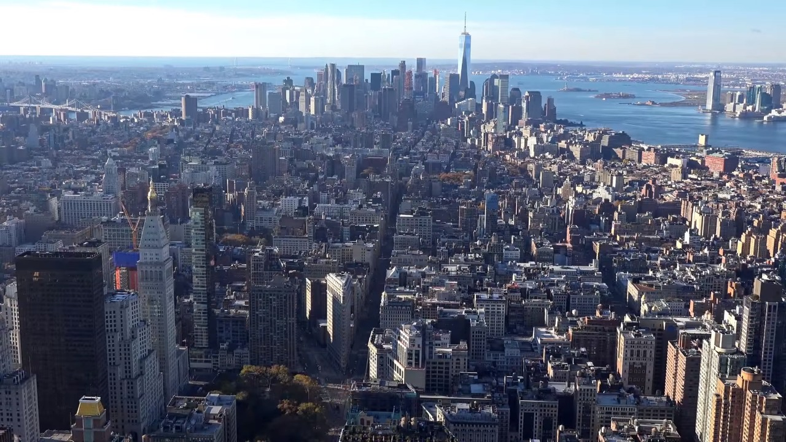

Los algoritmos de Inteligencia Artificial cuando escalan una imagen lo que hacen es imaginarse o inventar los píxeles intermedios que desconocemos, para ello es necesario entrenar la inteligencia artificial con una serie de imágenes de ejemplo con tal de que la inteligencia artificial aprenda un patrón a partir del cual reconstruir las imágenes a mayor resolución a partir de otras de menor resolución.

